Corne (corne_job_corrected_c12_agent_search.toml)
Two rough ops: '3D Rough 1' (6 mm flat) and '3D Rough 1 (copy)' (End Mill). Levels shown (the same for every column): Z 17.00, Z 5.00, Z 0.50.
contour_parallel (f32401326)
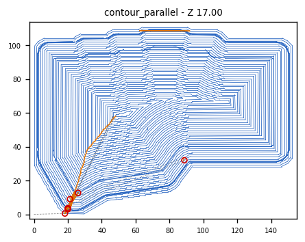
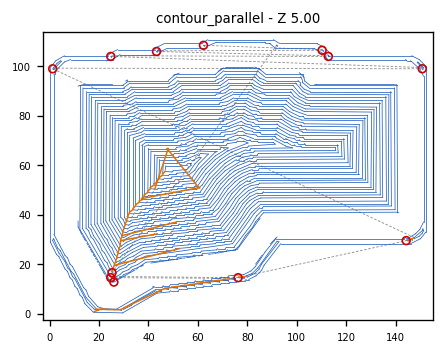
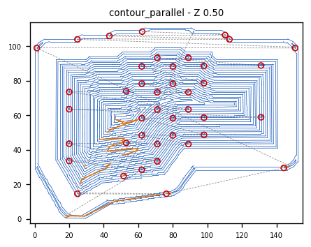
| op | entries | keep-down links | keep-down mm | cut mm |
|---|---|---|---|---|
| 3D Rough 1 | 73 | 176 | 768 | 39569 |
| 3D Rough 1 [copy] | 180 | 7 | 77 | 7060 |
| cycle time (rough ops) | 2022 s |
| cutting / rapid distance | 58238 / 21069 mm |
| air cut | 51.8% of runtime |
| collisions (rapid) | 0 (0) |
| sim cell | {"mm": 0.3, "mode": "auto", "source": "project", "project_mm": 0.3} |
Hard bars printed by the CLI
- "3D Rough 1 (copy)": the rough leaves 1428 island(s) standing more than 0.80 mm above its target (the floor its plan can reach with its tool, 0.50 mm stock to leave in it), 1387 of them against a wall: 772.9 mm2 in all at cell 0.300 mm. Free islands first, then the ones at a wall, tallest first in each group: 1.06 mm high, 0.30 mm wide, 0.2 mm2 at (65.1, -5.5); 1.06 mm high, 0.30 mm wide, 0.2 mm2 at (90.0, -5.5); 0.99 mm high, 0.30 mm wide, 0.2 mm2 at (87.9, -77.5); 0.98 mm high, 0.30 mm wide, 0.1 mm2 at (27.3, -10.3); 0.95 mm high, 0.30 mm wide, 0.1 mm2 at (65.7, -5.2); 0.95 mm high, 0.30 mm wide, 0.2 mm2 at (40.8, -95.2); 0.93 mm high, 0.30 mm wide, 0.1 mm2 at (89.4, -5.2); 0.92 mm high, 0.30 mm wide, 0.1 mm2 at (87.6, -77.8); 0.89 mm high, 0.30 mm wide, 0.1 mm2 at (112.2, -10.6); 0.88 mm high, 0.30 mm wide, 0.1 mm2 at (41.4, -94.9); and 1418 more. 411 island(s) stand taller than one depth per pass plus one cell (3.30 mm): a later pass meets more than one commanded step there.
- "3D Rough 1": the rough leaves 902 island(s) standing more than 0.80 mm above its target (the floor its plan can reach with its tool, 0.50 mm stock to leave in it), 871 of them against a wall: 1373.5 mm2 in all at cell 0.300 mm. Free islands first, then the ones at a wall, tallest first in each group: 1.01 mm high, 0.30 mm wide, 0.9 mm2 at (111.0, -10.3); 0.99 mm high, 0.30 mm wide, 0.2 mm2 at (87.9, -77.5); 0.92 mm high, 0.30 mm wide, 0.1 mm2 at (87.6, -77.8); 0.92 mm high, 0.30 mm wide, 0.2 mm2 at (40.8, -95.2); 0.90 mm high, 0.30 mm wide, 0.1 mm2 at (65.1, -5.5); 0.90 mm high, 0.30 mm wide, 0.1 mm2 at (65.7, -5.2); 0.89 mm high, 0.30 mm wide, 0.1 mm2 at (112.2, -10.6); 0.89 mm high, 0.30 mm wide, 0.1 mm2 at (90.0, -5.5); 0.89 mm high, 0.30 mm wide, 0.1 mm2 at (89.4, -5.2); 0.89 mm high, 0.30 mm wide, 0.1 mm2 at (109.2, -8.8); and 892 more. 111 island(s) stand taller than one depth per pass plus one cell (6.30 mm): a later pass meets more than one commanded step there.
- "3D Rough 1 (copy)": a fed link cuts stock it was planned to cross in air or on cut ground: link move 3153 removes 3.38 mm at (115.7, -42.4, 0.50). 3 of 317 link samples on 3 link moves remove more than 3.30 mm (this pass's commanded depth per pass plus one cell, 3.30 mm).
- "3D Rough 1": a fed link cuts stock it was planned to cross in air or on cut ground: link move 2320 removes 6.50 mm at (21.4, -107.4, 11.00). 1 of 3528 link samples on 1 link moves remove more than 6.30 mm (this pass's commanded depth per pass plus one cell, 6.30 mm).
geodesic_local_zigzag (13667775d)
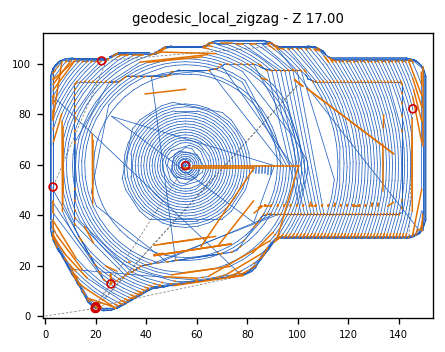
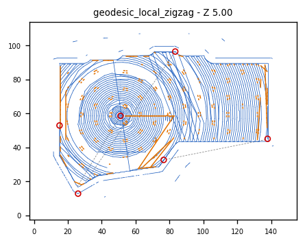
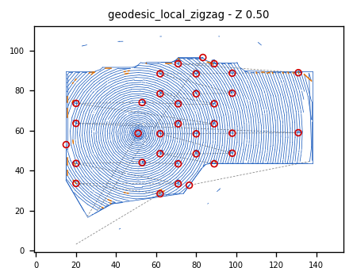
| op | entries | keep-down links | keep-down mm | cut mm |
|---|---|---|---|---|
| 3D Rough 1 | 56 | 1050 | 2371 | 29941 |
| 3D Rough 1 [copy] | 176 | 0 | 0 | 7060 |
| cycle time (rough ops) | 2607 s |
| cutting / rapid distance | 60483 / 18003 mm |
| air cut | 60.0% of runtime |
| collisions (rapid) | 0 (0) |
| sim cell | {"mm": 0.3, "mode": "auto", "source": "project", "project_mm": 0.3} |
Hard bars printed by the CLI
- "3D Rough 1 (copy)": the rough leaves 1024 island(s) standing more than 0.80 mm above its target (the floor its plan can reach with its tool, 0.50 mm stock to leave in it), 1010 of them against a wall: 3449.4 mm2 in all at cell 0.300 mm. Free islands first, then the ones at a wall, tallest first in each group: 3.50 mm high, 1.60 mm wide, 3.8 mm2 at (28.5, -91.0); 3.50 mm high, 1.40 mm wide, 3.1 mm2 at (19.8, -85.6); 3.50 mm high, 1.40 mm wide, 3.0 mm2 at (54.3, -85.6); 1.00 mm high, 0.30 mm wide, 0.2 mm2 at (90.0, -5.5); 0.99 mm high, 0.30 mm wide, 0.4 mm2 at (27.0, -10.3); 0.86 mm high, 0.30 mm wide, 0.4 mm2 at (44.4, -8.5); 0.86 mm high, 0.30 mm wide, 0.2 mm2 at (45.9, -8.2); 0.83 mm high, 0.30 mm wide, 0.1 mm2 at (89.4, -5.2); 0.83 mm high, 0.30 mm wide, 0.1 mm2 at (46.5, -94.0); 0.82 mm high, 0.30 mm wide, 0.1 mm2 at (85.8, -80.2); and 1014 more. 359 island(s) stand taller than one depth per pass plus one cell (3.30 mm): a later pass meets more than one commanded step there.
- "3D Rough 1": the rough leaves 961 island(s) standing more than 0.80 mm above its target (the floor its plan can reach with its tool, 0.50 mm stock to leave in it), 950 of them against a wall: 5106.2 mm2 in all at cell 0.300 mm. Free islands first, then the ones at a wall, tallest first in each group: 16.50 mm high, 7.59 mm wide, 1400.9 mm2 at (28.8, -16.6); 0.91 mm high, 0.30 mm wide, 0.1 mm2 at (27.0, -10.3); 0.91 mm high, 0.30 mm wide, 0.1 mm2 at (27.6, -10.0); 0.86 mm high, 0.30 mm wide, 0.1 mm2 at (44.4, -8.5); 0.84 mm high, 0.30 mm wide, 0.1 mm2 at (90.0, -5.5); 0.82 mm high, 0.30 mm wide, 0.1 mm2 at (85.8, -80.2); 0.82 mm high, 0.30 mm wide, 0.1 mm2 at (85.5, -80.5); 0.81 mm high, 0.30 mm wide, 0.1 mm2 at (46.5, -94.0); 0.81 mm high, 0.30 mm wide, 0.1 mm2 at (19.5, -99.7); 0.81 mm high, 0.30 mm wide, 0.1 mm2 at (82.5, -84.7); and 951 more. 6 island(s) stand taller than one depth per pass plus one cell (6.30 mm): a later pass meets more than one commanded step there.
- WARNING: high air cutting on '3D Rough 1' is 50% air-cut of total runtime — Tighten the boundary, lower the stock-top, or pre-rough with a faster op so the finishing pass doesn't traverse uncut material. Negligible for sparse projection ops.
geodesic_local_zigzag_v2 (13667775d)


| op | entries | keep-down links | keep-down mm | cut mm |
|---|---|---|---|---|
| 3D Rough 1 | 67 | 1413 | 8084 | 32652 |
| 3D Rough 1 [copy] | 176 | 0 | 0 | 7060 |
| cycle time (rough ops) | 2815 s |
| cutting / rapid distance | 69545 / 18925 mm |
| air cut | 62.6% of runtime |
| collisions (rapid) | 0 (0) |
| sim cell | {"mm": 0.3, "mode": "auto", "source": "project", "project_mm": 0.3} |
Hard bars printed by the CLI
- "3D Rough 1 (copy)": the rough leaves 1005 island(s) standing more than 0.80 mm above its target (the floor its plan can reach with its tool, 0.50 mm stock to leave in it), 996 of them against a wall: 3443.7 mm2 in all at cell 0.300 mm. Free islands first, then the ones at a wall, tallest first in each group: 3.50 mm high, 1.40 mm wide, 3.1 mm2 at (19.8, -85.6); 3.50 mm high, 1.40 mm wide, 3.0 mm2 at (54.3, -85.6); 1.00 mm high, 0.30 mm wide, 0.2 mm2 at (90.0, -5.5); 0.99 mm high, 0.30 mm wide, 0.4 mm2 at (27.0, -10.3); 0.86 mm high, 0.30 mm wide, 0.4 mm2 at (44.4, -8.5); 0.86 mm high, 0.30 mm wide, 0.2 mm2 at (45.9, -8.2); 0.83 mm high, 0.30 mm wide, 0.1 mm2 at (46.5, -94.0); 0.82 mm high, 0.30 mm wide, 0.1 mm2 at (89.4, -5.2); 0.82 mm high, 0.30 mm wide, 0.1 mm2 at (19.5, -99.7); 16.66 mm high, 0.30 mm wide, 0.5 mm2 at (110.4, -9.7) at a wall; and 995 more. 358 island(s) stand taller than one depth per pass plus one cell (3.30 mm): a later pass meets more than one commanded step there.
- "3D Rough 1": the rough leaves 956 island(s) standing more than 0.80 mm above its target (the floor its plan can reach with its tool, 0.50 mm stock to leave in it), 949 of them against a wall: 5040.2 mm2 in all at cell 0.300 mm. Free islands first, then the ones at a wall, tallest first in each group: 16.50 mm high, 7.59 mm wide, 1401.3 mm2 at (28.8, -16.6); 0.91 mm high, 0.30 mm wide, 0.1 mm2 at (27.0, -10.3); 0.91 mm high, 0.30 mm wide, 0.1 mm2 at (27.6, -10.0); 0.86 mm high, 0.30 mm wide, 0.1 mm2 at (44.4, -8.5); 0.84 mm high, 0.30 mm wide, 0.1 mm2 at (90.0, -5.5); 0.81 mm high, 0.30 mm wide, 0.1 mm2 at (46.5, -94.0); 0.81 mm high, 0.30 mm wide, 0.1 mm2 at (19.5, -99.7); 22.50 mm high, 9.47 mm wide, 3273.9 mm2 at (14.1, -109.3) at a wall; 14.55 mm high, 0.30 mm wide, 0.2 mm2 at (45.6, -7.3) at a wall; 11.69 mm high, 0.30 mm wide, 0.2 mm2 at (109.5, -7.9) at a wall; and 946 more. 6 island(s) stand taller than one depth per pass plus one cell (6.30 mm): a later pass meets more than one commanded step there.
- WARNING: high air cutting on '3D Rough 1' is 56% air-cut of total runtime — Tighten the boundary, lower the stock-top, or pre-rough with a faster op so the finishing pass doesn't traverse uncut material. Negligible for sparse projection ops.
geodesic_local_oneway (13667775d)
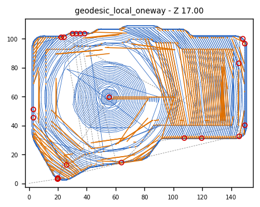


| op | entries | keep-down links | keep-down mm | cut mm |
|---|---|---|---|---|
| 3D Rough 1 | 91 | 1487 | 9605 | 33165 |
| 3D Rough 1 [copy] | 176 | 0 | 0 | 7060 |
| cycle time (rough ops) | 2934 s |
| cutting / rapid distance | 72262 / 21357 mm |
| air cut | 62.5% of runtime |
| collisions (rapid) | 0 (0) |
| sim cell | {"mm": 0.3, "mode": "auto", "source": "project", "project_mm": 0.3} |
Hard bars printed by the CLI
- "3D Rough 1 (copy)": the rough leaves 1009 island(s) standing more than 0.80 mm above its target (the floor its plan can reach with its tool, 0.50 mm stock to leave in it), 997 of them against a wall: 3447.9 mm2 in all at cell 0.300 mm. Free islands first, then the ones at a wall, tallest first in each group: 3.50 mm high, 1.60 mm wide, 3.8 mm2 at (28.5, -91.0); 3.50 mm high, 1.40 mm wide, 3.1 mm2 at (19.8, -85.6); 3.50 mm high, 1.40 mm wide, 3.0 mm2 at (54.3, -85.6); 1.00 mm high, 0.30 mm wide, 0.2 mm2 at (90.0, -5.5); 0.98 mm high, 0.30 mm wide, 0.4 mm2 at (27.0, -10.3); 0.86 mm high, 0.30 mm wide, 0.4 mm2 at (44.4, -8.5); 0.86 mm high, 0.30 mm wide, 0.2 mm2 at (45.9, -8.2); 0.85 mm high, 0.30 mm wide, 0.1 mm2 at (89.4, -5.2); 0.83 mm high, 0.30 mm wide, 0.1 mm2 at (46.5, -94.0); 0.82 mm high, 0.30 mm wide, 0.1 mm2 at (85.8, -80.2); and 999 more. 360 island(s) stand taller than one depth per pass plus one cell (3.30 mm): a later pass meets more than one commanded step there.
- "3D Rough 1": the rough leaves 958 island(s) standing more than 0.80 mm above its target (the floor its plan can reach with its tool, 0.50 mm stock to leave in it), 948 of them against a wall: 5086.7 mm2 in all at cell 0.300 mm. Free islands first, then the ones at a wall, tallest first in each group: 16.50 mm high, 7.59 mm wide, 1397.3 mm2 at (28.8, -16.6); 0.90 mm high, 0.30 mm wide, 0.1 mm2 at (27.0, -10.3); 0.90 mm high, 0.30 mm wide, 0.1 mm2 at (27.6, -10.0); 0.86 mm high, 0.30 mm wide, 0.1 mm2 at (44.4, -8.5); 0.84 mm high, 0.30 mm wide, 0.1 mm2 at (90.0, -5.5); 0.82 mm high, 0.30 mm wide, 0.1 mm2 at (85.8, -80.2); 0.82 mm high, 0.30 mm wide, 0.1 mm2 at (85.5, -80.5); 0.82 mm high, 0.30 mm wide, 0.1 mm2 at (89.4, -5.2); 0.81 mm high, 0.30 mm wide, 0.1 mm2 at (46.5, -94.0); 0.81 mm high, 0.30 mm wide, 0.1 mm2 at (82.5, -84.7); and 948 more. 6 island(s) stand taller than one depth per pass plus one cell (6.30 mm): a later pass meets more than one commanded step there.
- WARNING: high air cutting on '3D Rough 1' is 56% air-cut of total runtime — Tighten the boundary, lower the stock-top, or pre-rough with a faster op so the finishing pass doesn't traverse uncut material. Negligible for sparse projection ops.
geodesic_local_zigzag_pick (f32401326)
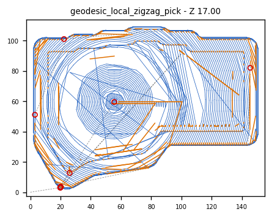
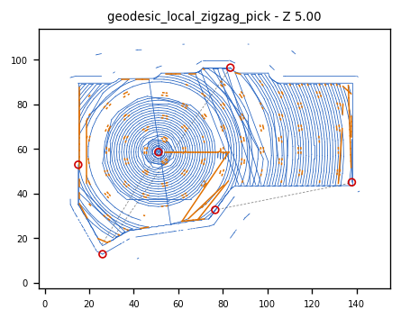
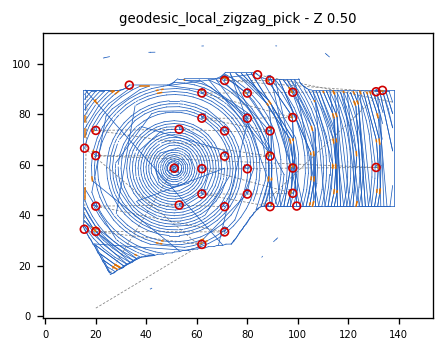
| op | entries | keep-down links | keep-down mm | cut mm |
|---|---|---|---|---|
| 3D Rough 1 | 56 | 1050 | 2371 | 29941 |
| 3D Rough 1 [copy] | 176 | 0 | 0 | 7060 |
| cycle time (rough ops) | 2607 s |
| cutting / rapid distance | 60483 / 18003 mm |
| air cut | 60.0% of runtime |
| collisions (rapid) | 0 (0) |
| sim cell | {"mm": 0.3, "mode": "auto", "source": "project", "project_mm": 0.3} |
Hard bars printed by the CLI
- "3D Rough 1 (copy)": the rough leaves 1024 island(s) standing more than 0.80 mm above its target (the floor its plan can reach with its tool, 0.50 mm stock to leave in it), 1010 of them against a wall: 3449.4 mm2 in all at cell 0.300 mm. Free islands first, then the ones at a wall, tallest first in each group: 3.50 mm high, 1.60 mm wide, 3.8 mm2 at (28.5, -91.0); 3.50 mm high, 1.40 mm wide, 3.1 mm2 at (19.8, -85.6); 3.50 mm high, 1.40 mm wide, 3.0 mm2 at (54.3, -85.6); 1.00 mm high, 0.30 mm wide, 0.2 mm2 at (90.0, -5.5); 0.99 mm high, 0.30 mm wide, 0.4 mm2 at (27.0, -10.3); 0.86 mm high, 0.30 mm wide, 0.4 mm2 at (44.4, -8.5); 0.86 mm high, 0.30 mm wide, 0.2 mm2 at (45.9, -8.2); 0.83 mm high, 0.30 mm wide, 0.1 mm2 at (89.4, -5.2); 0.83 mm high, 0.30 mm wide, 0.1 mm2 at (46.5, -94.0); 0.82 mm high, 0.30 mm wide, 0.1 mm2 at (85.8, -80.2); and 1014 more. 359 island(s) stand taller than one depth per pass plus one cell (3.30 mm): a later pass meets more than one commanded step there.
- "3D Rough 1": the rough leaves 961 island(s) standing more than 0.80 mm above its target (the floor its plan can reach with its tool, 0.50 mm stock to leave in it), 950 of them against a wall: 5106.2 mm2 in all at cell 0.300 mm. Free islands first, then the ones at a wall, tallest first in each group: 16.50 mm high, 7.59 mm wide, 1400.9 mm2 at (28.8, -16.6); 0.91 mm high, 0.30 mm wide, 0.1 mm2 at (27.0, -10.3); 0.91 mm high, 0.30 mm wide, 0.1 mm2 at (27.6, -10.0); 0.86 mm high, 0.30 mm wide, 0.1 mm2 at (44.4, -8.5); 0.84 mm high, 0.30 mm wide, 0.1 mm2 at (90.0, -5.5); 0.82 mm high, 0.30 mm wide, 0.1 mm2 at (85.8, -80.2); 0.82 mm high, 0.30 mm wide, 0.1 mm2 at (85.5, -80.5); 0.81 mm high, 0.30 mm wide, 0.1 mm2 at (46.5, -94.0); 0.81 mm high, 0.30 mm wide, 0.1 mm2 at (19.5, -99.7); 0.81 mm high, 0.30 mm wide, 0.1 mm2 at (82.5, -84.7); and 951 more. 6 island(s) stand taller than one depth per pass plus one cell (6.30 mm): a later pass meets more than one commanded step there.
- WARNING: high air cutting on '3D Rough 1' is 50% air-cut of total runtime — Tighten the boundary, lower the stock-top, or pre-rough with a faster op so the finishing pass doesn't traverse uncut material. Negligible for sparse projection ops.
AgentSearch (cdc9814e)
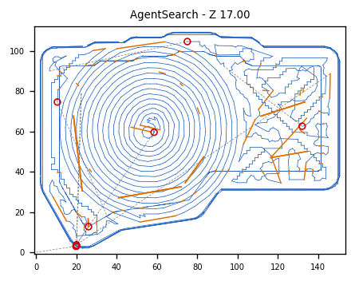
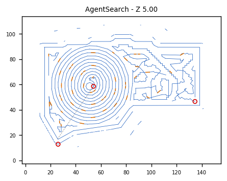

| op | entries | keep-down links | keep-down mm | cut mm |
|---|---|---|---|---|
| 3D Rough 1 | 48 | 136 | 741 | 14312 |
| 3D Rough 1 [copy] | 182 | 4 | 51 | 7952 |
| cycle time (rough ops) | 2112 s |
| cutting / rapid distance | 38487 / 17531 mm |
| air cut | 55.2% of runtime |
| collisions (rapid) | 0 (0) |
| sim cell | {"mm": 0.3, "mode": "auto", "source": "project", "project_mm": 0.3} |
Hard bars printed by the CLI
- "3D Rough 1 (copy)": the rough leaves 1257 island(s) standing more than 0.80 mm above its target (the floor its plan can reach with its tool, 0.50 mm stock to leave in it), 1175 of them against a wall: 3652.5 mm2 in all at cell 0.300 mm. Free islands first, then the ones at a wall, tallest first in each group: 13.00 mm high, 0.30 mm wide, 0.5 mm2 at (102.9, -22.3); 9.75 mm high, 0.30 mm wide, 0.7 mm2 at (119.7, -22.9); 8.12 mm high, 0.30 mm wide, 0.3 mm2 at (82.2, -64.9); 4.50 mm high, 1.04 mm wide, 2.8 mm2 at (146.4, -64.6); 4.50 mm high, 0.30 mm wide, 0.6 mm2 at (146.4, -17.5); 3.62 mm high, 1.40 mm wide, 2.9 mm2 at (18.9, -55.3); 3.50 mm high, 1.60 mm wide, 3.7 mm2 at (28.5, -91.0); 3.50 mm high, 1.60 mm wide, 3.4 mm2 at (37.2, -85.9); 3.50 mm high, 1.50 mm wide, 3.2 mm2 at (45.3, -80.8); 3.50 mm high, 1.50 mm wide, 3.6 mm2 at (54.0, -76.0); and 1247 more. 412 island(s) stand taller than one depth per pass plus one cell (3.30 mm): a later pass meets more than one commanded step there.
- "3D Rough 1": the rough leaves 457 island(s) standing more than 0.80 mm above its target (the floor its plan can reach with its tool, 0.50 mm stock to leave in it), 404 of them against a wall: 6832.7 mm2 in all at cell 0.300 mm. Free islands first, then the ones at a wall, tallest first in each group: 16.50 mm high, 7.59 mm wide, 1478.2 mm2 at (28.8, -16.6); 16.50 mm high, 7.59 mm wide, 51.5 mm2 at (105.3, -24.7); 15.75 mm high, 7.50 mm wide, 50.4 mm2 at (18.6, -55.6); 8.12 mm high, 0.30 mm wide, 0.3 mm2 at (82.2, -64.9); 6.66 mm high, 0.30 mm wide, 0.4 mm2 at (135.0, -22.9); 6.25 mm high, 7.12 mm wide, 49.0 mm2 at (122.1, -41.5); 6.25 mm high, 0.90 mm wide, 5.8 mm2 at (135.3, -31.9); 4.50 mm high, 1.04 mm wide, 2.8 mm2 at (146.4, -64.6); 4.50 mm high, 0.30 mm wide, 0.6 mm2 at (146.4, -17.5); 4.16 mm high, 1.04 mm wide, 7.6 mm2 at (22.2, -22.9); and 447 more. 12 island(s) stand taller than one depth per pass plus one cell (6.30 mm): a later pass meets more than one commanded step there.
- crosses standing material deeper than this pass was planned to cut: 2.6% of cutting samples remove more than the commanded 3.00 mm depth per pass by over 0.300 mm, peaking at 15.00 mm
- WARNING: high air cutting on '3D Rough 1' is 45% air-cut of total runtime — Tighten the boundary, lower the stock-top, or pre-rough with a faster op so the finishing pass doesn't traverse uncut material. Negligible for sparse projection ops.
Pass spacing and load at Z 5.00 (3D Rough 1)
| arm | pass step along the normal, length-weighted median | 10th to 90th percentile | cut length over 0.471 | over the C18 screen for this sim cell | over 0.471 by producer: perimeter / body / waterline |
|---|---|---|---|---|---|
| contour_parallel | 1.12 mm | 1.00 to 1.50 mm (n 2178; 192 over 6 mm set apart) | 8.01% | 7.19% (screen 0.513) | — / 3149 / 10 mm |
| geodesic_local_zigzag | 1.14 mm | 0.66 to 2.54 mm (n 1887; 209 over 6 mm set apart) | 5.88% | 5.56% (screen 0.513) | 1293 / 43 / 593 mm |
| geodesic_local_zigzag_v2 | 1.13 mm | 0.65 to 2.24 mm (n 1852; 226 over 6 mm set apart) | 5.44% | 5.15% (screen 0.513) | 1293 / 47 / 593 mm |
| geodesic_local_oneway | 1.13 mm | 0.59 to 2.38 mm (n 1800; 226 over 6 mm set apart) | 5.34% | 5.05% (screen 0.513) | 1293 / 44 / 589 mm |
| geodesic_local_zigzag_pick | 1.14 mm | 0.66 to 2.54 mm (n 1887; 209 over 6 mm set apart) | 5.88% | 5.56% (screen 0.513) | 1293 / 43 / 593 mm |
| AgentSearch | 2.68 mm | 2.35 to 4.78 mm (n 866; 366 over 6 mm set apart) | 23.50% | 21.41% (screen 0.513) | 1424 / 1269 / 645 mm |
Against the main control: contour_parallel puts its passes 1.12 mm apart and the geodesic zigzag 1.14 mm (stepover 1.2 mm); the geodesic zigzag cuts 0.83 times the contour_parallel length on '3D Rough 1', and 5.88% of it reads over 0.471 against 8.01% for contour_parallel. AgentSearch (secondary) is over the bound: 23.50% of its cut length on '3D Rough 1' reads over 0.471 in the simulation (21.41% over the screen 0.513 for its sim cell).
Spacing (C24's measure): the step along the normal between adjacent passes. From the midpoint of each pass move the normal is cast both ways; the distance to the nearest other pass move is one sample, weighted by the move length. A pass is a cut move of the level that the closing simulation reads over one sim cell / D (so a straight move across the cut, which runs through cleared stock, is not a pass); moves within R + 0.05 mm of the starter centre (51.05, 58.55) are left out (the starter helix); a step over one tool diameter is set apart. Producer split (C30, phase3/c30): perimeter sweep (agent-slice arms only; contour_parallel has none, so —), region body, waterline cleanup, by the trace annotations. Load: the closing simulation of the --sim-artifact run (byte-equal program.nc), the radial width of cut of each cutting sample whose intent is a cut (clearing_cut, of any kinematics; entry and link samples left out), each weighted by its XY length. 0.471 is the C18 exact bound for stepover 2.0 on a 3 mm radius (P3_C18_3d_oracle.md); at the Corne stepover of 1.2 the ceiling is lower, so 0.471 under-counts there. The screen adds the sim cell (Corne 0.3 mm, wanaka200 1.0 mm), because the simulation blends partly covered cells.
Load rule change: over 0.471, old rule against new rule (3D Rough 1)
| arm | old: linear and arc samples, any intent | new: cut intent, any kinematics | change |
|---|---|---|---|
| contour_parallel | 8.06% of 38624 mm | 8.01% of 39425 mm | -0.05 points |
| geodesic_local_zigzag | 4.14% of 33251 mm | 5.88% of 32835 mm | +1.74 points |
| geodesic_local_zigzag_v2 | 3.30% of 41792 mm | 5.44% of 35541 mm | +2.14 points |
| geodesic_local_oneway | 3.13% of 43818 mm | 5.34% of 36073 mm | +2.21 points |
| geodesic_local_zigzag_pick | 4.14% of 33251 mm | 5.88% of 32835 mm | +1.74 points |
| AgentSearch | 20.19% of 13769 mm | 23.50% of 14207 mm | +3.31 points |
The first measure (4 rays from the seed), kept for reference
| arm | ray spacing, median | range |
|---|---|---|
| contour_parallel | 1.25 mm | 0.45 to 5.38 mm (n 121; 5 gaps over 6 mm set apart) |
| geodesic_local_zigzag | 1.12 mm | 0.05 to 4.55 mm (n 160; 3 gaps over 6 mm set apart) |
| geodesic_local_zigzag_v2 | 1.12 mm | 0.05 to 5.02 mm (n 158; 4 gaps over 6 mm set apart) |
| geodesic_local_oneway | 1.12 mm | 0.05 to 5.02 mm (n 159; 4 gaps over 6 mm set apart) |
| geodesic_local_zigzag_pick | 1.12 mm | 0.05 to 4.55 mm (n 160; 3 gaps over 6 mm set apart) |
| AgentSearch | 2.55 mm | 0.26 to 5.94 mm (n 60; 2 gaps over 6 mm set apart) |
The rays read low because they start at the seed and over-sample the levels inside the radius where the law spaces levels closer than the stepover (25.45 mm at stepover 1.2, 22.7 mm at 2.0; P2_C2 section C24), and because they also cross the starter helix and, on one-way, the straight moves across the cut.